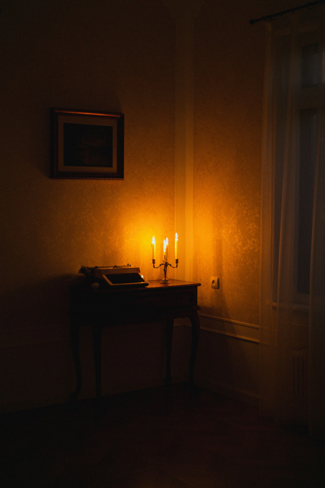
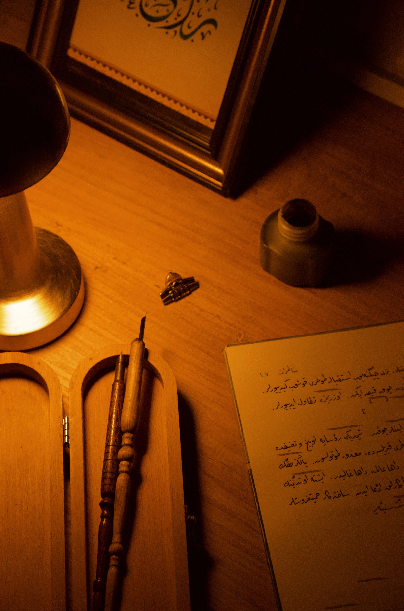

Introduction
Nous imaginons souvent l'inspiration comme un éclair soudain. Une idée qui surgit sans prévenir. Une phrase qui apparaît d'elle-même. Pourtant, la plupart des histoires naissent dans des conditions beaucoup plus modestes. Une pièce silencieuse. Une table. Quelques feuilles. Et parfois simplement la lumière discrète d'une lampe veillant dans la nuit. Depuis des siècles, écrivains, poètes et chroniqueurs ont trouvé dans ces heures tardives un espace particulier où les mots semblent circuler plus librement. Comme si l'obscurité éloignait le bruit du monde pour laisser place à une conversation plus intime avec l'imaginaire. À la lueur d'une lampe, écrire devient alors bien davantage qu'un travail. Cela devient une forme d'écoute.

Le refuge du silence
La création littéraire demande quelque chose de rare dans notre époque : une attention entière. Chaque jour, nos pensées sont sollicitées par des écrans, des messages, des informations qui se succèdent sans interruption. L'esprit saute d'un sujet à l'autre sans jamais demeurer longtemps au même endroit. L'écriture réclame exactement l'inverse. Elle demande de ralentir. De rester auprès d'une idée assez longtemps pour qu'elle révèle ce qu'elle contient réellement. C'est peut-être pour cette raison que tant d'auteurs ont cherché le calme des soirées et des nuits. Non parce qu'ils méprisaient le monde extérieur, mais parce qu'ils avaient besoin d'entendre ce qui se passait à l'intérieur. Le silence n'est pas un vide. C'est un espace où les pensées cessent enfin de se bousculer.
La lumière qui délimite un territoire
Une lampe ne transforme pas seulement une pièce. Elle transforme notre regard. Dans une chambre plongée dans la pénombre, la lumière crée une frontière invisible. Tout ce qui se trouve dans son cercle devient essentiel. Le reste s'efface momentanément. La page. L'encre. La phrase en cours. Rien d'autre. Cette simplicité possède quelque chose de profondément apaisant. L'imagination travaille souvent mieux lorsque le monde se réduit à quelques éléments familiers. Une lampe devient alors davantage qu'un objet utilitaire. Elle devient une porte. Un passage vers cet espace intérieur où les personnages prennent vie et où les récits commencent à se construire.
Les compagnons invisibles de l'écrivain
L'image de l'écrivain solitaire est trompeuse. Même lorsqu'il travaille seul, il n'est jamais véritablement isolé. Autour de lui se tiennent des présences invisibles. Les auteurs qu'il a lus. Les souvenirs qui l'accompagnent. Les voix qu'il invente. Les lecteurs qu'il n'a pas encore rencontrés. Chaque livre naît d'un dialogue silencieux entre toutes ces influences. L'écrivain écoute autant qu'il crée. Il recueille des fragments de mémoire, des émotions oubliées, des questions sans réponse. Puis il tente de leur donner une forme capable de traverser le temps.

Pourquoi certaines pages s'écrivent la nuit
La nuit possède une qualité particulière. Elle ralentit les horloges intérieures. Les obligations de la journée s'éloignent peu à peu. Les conversations se taisent. Les rues deviennent plus discrètes. Dans cette atmosphère suspendue, l'esprit se montre souvent plus réceptif. Les idées qui semblaient confuses dans la lumière du jour trouvent soudain leur place. Les phrases deviennent plus naturelles. Les images plus nettes. Peut-être parce que la nuit nous rappelle une vérité essentielle : écrire n'est pas une performance. C'est une rencontre. Une rencontre entre celui qui écrit et ce qu'il porte en lui depuis longtemps sans parvenir à le formuler.
Conclusion
Une lampe éclaire peu de choses. Quelques feuilles. Une table. Une main qui écrit. Et pourtant, dans ce cercle de lumière modeste sont nés certains des récits qui ont traversé les siècles. L'écriture ne demande pas toujours des circonstances exceptionnelles. Elle demande surtout un moment de présence. Un instant où le bruit du monde s'efface suffisamment pour laisser apparaître une pensée sincère. Peut-être est-ce cela, finalement, écrire à la lueur d'une lampe. Créer un espace où une histoire peut enfin trouver sa voix.
« Les mots ne naissent pas dans la lumière. Ils naissent dans l'attention que nous leur accordons. »
Gardien des archives du Veilleur